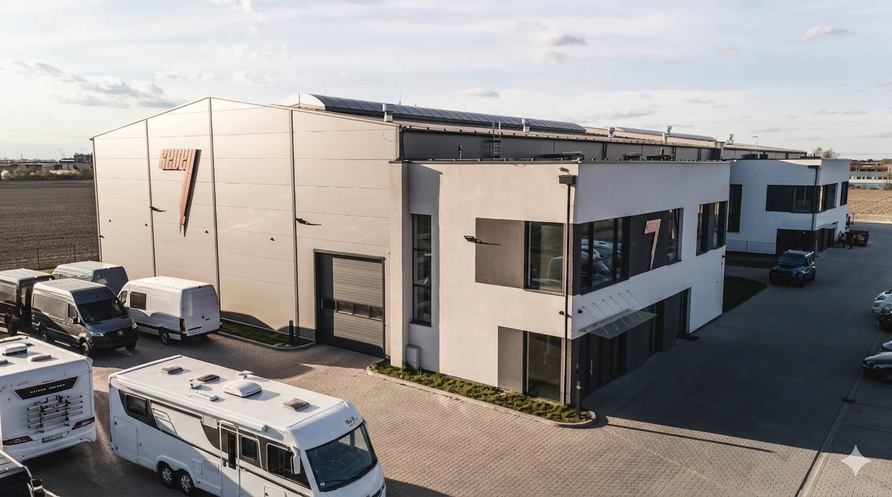
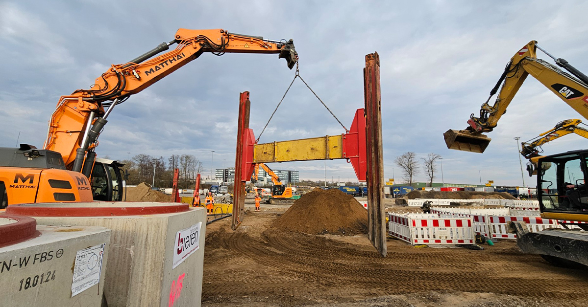
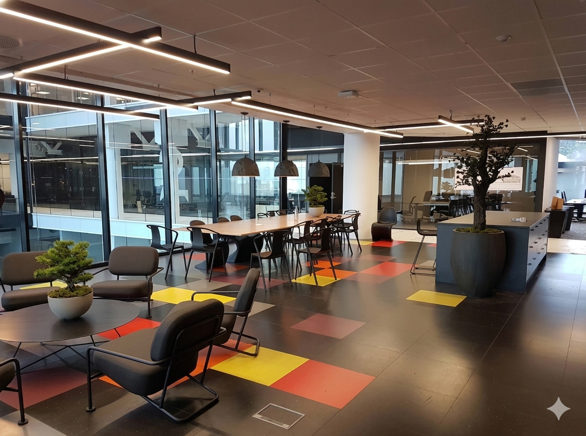

Budujemy z precyzją.
Europejski Standard.
Polska Realizacja.
Generalne wykonawstwo hal przemysłowych, magazynów i instalacji technologicznych. Inżynierska precyzja, bezkompromisowa jakość. Komunikacja: PL · EN · DE · FR · RU · UA
Dlaczego Velor Construction?
Inżynierska Precyzja
Doświadczenie z rynków skandynawskich i niemieckich pozwala nam realizować najbardziej złożone konstrukcje stalowe i żelbetowe zgodnie z Eurokodami.
Technologia i Instalacje
Nie tylko budujemy mury. Projektujemy i wdrażamy zaawansowane instalacje przemysłowe, HVAC oraz automatykę budynkową (BMS).
Generalne Wykonawstwo
Przejmujemy pełną odpowiedzialność za proces budowlany. Od pozwolenia na budowę, przez montaż konstrukcji, aż po odbiory końcowe.
Zakres Usług
Hale Stalowe i Magazyny
Projektowanie i montaż konstrukcji stalowych. Kompleksowa budowa obiektów wielkopowierzchniowych, centrów logistycznych i produkcyjnych.
Optymalizacja konstrukcjiInstalacje Przemysłowe
Wykonawstwo zaawansowanych systemów HVAC, instalacji elektrycznych wysokiej mocy, sieci sanitarnych oraz systemów ppoż.
HVAC / EL / SAN / BMSGeneralne Wykonawstwo
Kompleksowa realizacja inwestycji w systemie „Zaprojektuj i Buduj”. Pełne doradztwo techniczne i optymalizacja kosztów inwestycji.
Pełna koordynacjaProject Management
Profesjonalne zarządzanie budową, nadzór inwestorski oraz controlling kosztowy i terminowy przy użyciu nowoczesnych narzędzi IT. Codzienny raport z postępu prac dla inwestora — standard każdej realizacji.
Standardy międzynarodoweBudownictwo z Litego Drewna — Holz100
Realizujemy obiekty w austriackiej technologii Holz100: ściany ze 100% litego drewna, łączone bukowymi kołkami — bez kleju, metalu i chemii budowlanej.
Lite drewno / Premium / ESGTechnologia Holz100
Obok konstrukcji stalowych rozwijamy drugi filar: budownictwo z litego drewna w systemie Holz100 — jednej z najczystszych technologii drewnianych w Europie.
Zero kleju, zero metalu
Warstwy litego drewna łączone wyłącznie suszonymi bukowymi kołkami, które po związaniu wilgoci z otoczenia ryglują konstrukcję na stałe.
Mikroklimat nieosiągalny dla technologii klejonych
Dyfuzyjnie otwarte przegrody naturalnie regulują wilgotność i temperaturę wnętrza przez cały rok.
Bezpieczeństwo potwierdzone badaniami
Masywne przegrody z litego drewna osiągają wysokie klasy odporności ogniowej i znakomitą akumulację cieplną.
Budynek jako magazyn CO₂
Każdy obiekt wiąże dwutlenek węgla na dziesięciolecia — argument ESG, który dziś wycenia każdy inwestor instytucjonalny.
Doświadczenie Zespołu
Projekty zrealizowane przez członków naszego zespołu w ramach struktur czołowych generalnych wykonawców w Polsce, Niemczech i Norwegii.

Hala dealera Brabus & Topcar Design
Od konstrukcji po przekazanie
Konstrukcja · Instalacje · PPOŻ
Wyzwanie: Kompleksowa realizacja obiektu dla dealera samochodów premium — równoległa praca wielu branż i podwykonawców na jednym placu.
Rozwiązanie: Koordynacja podwykonawców i własnych brygad: konstrukcja stalowa, pełna instalacja elektryczna i sanitarna, ocieplenie posadzek, ściany działowe, stolarka, drzwi przeciwpożarowe, glazura, prace ziemne i brukowe, wylewki.
Rezultat: Obiekt doprowadzony od stanu surowego do przekazania — zakres tożsamy z dzisiejszą ofertą generalnego wykonawstwa Velor.

Rozbudowa torowiska terminalu intermodalnego
Transport kombinowany kolej–morze
Demontaż → nowa infrastruktura
Wyzwanie: Przedłużenie torowiska w działającym terminalu portowym — kolizje z istniejącą infrastrukturą i bieżącą logistyką operatora.
Rozwiązanie: Demontaż istniejącej infrastruktury, roboty ziemne i kanalizacyjne, budowa nowego układu torowego w koordynacji z pracą terminalu.
Rezultat: Nowe torowisko zintegrowane z istniejącym układem bez wstrzymania operacji portowych.

Media City Bergen — Fasad i Wykończenie
Klasa Premium
Fasada i wnętrza
Wyzwanie: Realizacja skomplikowanej fasady szklano-aluminiowej oraz wykończenia wnętrz biurowych typu high-end w największym centrum medialnym Norwegii.
Rozwiązanie: Zarządzanie dostawami Just-in-Time w gęstej zabudowie miejskiej i koordynacja prac wykończeniowych dla nadawców TV.
Rezultat: Prestiżowa realizacja stanowiąca benchmark jakości wykończenia na rynku skandynawskim.
Pozostałe projekty zespołu
🇵🇱 Polska
- Garwolin — kompletna instalacja elektryczna nowego obiektu gastronomicznego (KFC).
- Warszawa, osiedle Stromboli — wymiana ciepłomierzy i wodomierzy w 144 lokalach oraz izolacji pionów.
- Warszawa, Osiedle Róż — renowacja wentylacji i instalacji przeciwpożarowej garaży.
- Warszawa — modernizacja oświetlenia garażu podziemnego: czujniki ruchu, rozdzielnice.
- Warszawa — placówka przedszkolna: renowacja sal i zagospodarowanie terenu.
- Pruszków i Warszawa — osiedla wielorodzinne: montaż portali drzwiowych i stolarki.
- Mazowsze — dom jednorodzinny: roboty ziemne, zbrojenie, szalunki, betonowanie.
🇩🇪 Niemcy
- Sande k. Wilhelmshaven — farma fotowoltaiczna: montaż paneli i ogrodzeń.
- Bielefeld — montaż ekologicznych paneli akustycznych.
- Sande (stacja kolejowa) — przebudowa przejścia pod torami.
- Magdeburg, Hasselbachplatz — renowacja skrzyżowania torowisk tramwajowych.
- Heeslingen — renowacja odcinka linii kolejowej (4 km) z montażem toru w tolerancji milimetrowej i organizacją ruchu.
🇳🇴 Norwegia
- Strusshamn, Kleppestø — hydroizolacja i ścianki działowe GK.
- Bergen, Lille Gartnerløkken — kompleks mieszkalny: prefabrykaty, drewniany dach, fasada.
- Bergen, Steinkjellergaten — modernizacja PPOŻ klatki schodowej i piwnic.
- Region Bergen — montaż szklarni 7,8 × 12,8 m od fundamentów po dach.
Proces Inwestycyjny
Analiza i Koncepcja
Analizujemy potrzeby operacyjne, warunki zabudowy i dobieramy optymalne rozwiązania konstrukcyjne.
Projektowanie BIM
Tworzymy cyfrowy model obiektu (BIM), co pozwala wyeliminować kolizje i precyzyjnie zaplanować koszty.
Pozwolenia i Formalności
Kompletujemy dokumentację i uzyskujemy niezbędne pozwolenia administracyjne oraz techniczne.
Budowa i Montaż
Realizujemy prace ziemne, montaż konstrukcji i instalacji pod ścisłym nadzorem inżynierskim.
Uruchomienie i Odbiór
Przeprowadzamy testy systemów, szkolenia personelu i przekazujemy obiekt do użytkowania.
FAQ
Jaki jest czas budowy typowej hali?
Standardowa hala o powierzchni 1000-2000 m² powstaje w czasie 4-6 miesięcy, w zależności od stopnia skomplikowania instalacji.
Czy pomagacie w uzyskaniu pozwolenia na budowę?
Tak, w ramach Generalnego Wykonawstwa bierzemy na siebie pełny proces administracyjny i prawny.
Czy budujecie według norm Eurokod?
Wszystkie nasze projekty i realizacje są ściśle zgodne z europejskimi normami projektowania konstrukcji (Eurokody).
Jakie instalacje przemysłowe wykonujecie?
Zajmujemy się pełnym spektrum: HVAC, stacje trafo, sprężone powietrze, instalacje tryskaczowe oraz automatyka procesowa.
Czy oferujecie serwis pogwarancyjny?
Zapewniamy pełną opiekę serwisową 24/7 dla kluczowych systemów instalacyjnych oraz przeglądy okresowe konstrukcji.
Czym jest technologia Holz100?
To austriacki system budowy ze 100% litego drewna: warstwy desek łączone bukowymi kołkami, bez kleju i łączników metalowych.
Gotowy na nowy standard?
Oddzwonimy w ciągu 24h roboczych, aby omówić szczegóły Twojego projektu.
Bezpośredni kontakt:
+48 XXX XXX XXXDołącz do zespołu
Szukamy specjalistów, dla których jakość to nie pusty slogan. Jeśli pracujesz w standardzie DIN i chcesz realizować projekty premium – czekamy na Ciebie.
Co oferujemy:
- Atrakcyjne stawki i terminowe płatności
- Praca przy najbardziej prestiżowych projektach
- Profesjonalny sprzęt i narzędzia renomowanych marek